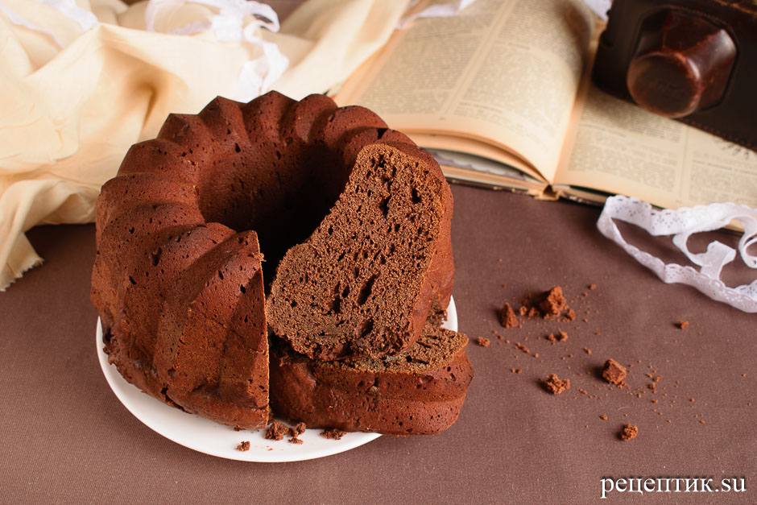

Репецт шоклоадного кексика

Иногда хочется шоколадного кекса к кофе но в магазин идти лень
в таком случай нам поможет простой рецепт шоколадного кекса
Для приготовления простого шоколадного кекса с какао
Нам понадобятся следующие ингредиенты:
- 4 яйца,
- 200 г сливочного масла,
- 120 мл молока,
- 240 г сахара,
- 75 г порошка какао,
- 370 г муки,
- щепотка соли,
- 0,5 ч. л. соды,
- 0,5 ч. л. уксуса.
Как приготовить простой шоколадный кекс с какао:
Итак, переходим к процессу приготовления простого шоколадного кекса с какао.
- Соединяем в огнеупорной емкости масло, сахар, соль, молоко и какао.
- Прогреваем на среднем огне до растворения сахара. Доводим почти до кипения, но не кипятим.
- Даем шоколадной массе полностью остыть и добавляем яйца.
- Вымешиваем до однородности.
- Затем добавляем муку.
- И соду, погашенную уксусом.
- Еще раз мешаем тесто и выкладываем его в форму для выпекания.
Если печем в силиконовой форме – кекс после выпекания хорошо выйдет сам,
а вот металлическую форму лучше застелить пергаментом.
Печем шоколадный кекс в духовке, разогретой до 200˚С,
в течение 40-50 минут; готовность проверяем деревянной шпажкой
(если при прокалывании кекса шпажка выходит сухой, без налипшего теста – кекс готов).
На следующий день шоколадный кекс будет еще вкуснее,
если после остывания завернуть его в пищевую пленку и дать настояться в холодильнике.
Приятного аппетита!